Biologists’ data, whether on individuals, populations or communities, are usually presented in the form of rectangular tables, with observations (n) in the rows and variables (p) in the columns.
The graphical representation of these n observations and p variables is easily achieved when there are only 2 or 3 variables (dimension). However, when the number of variables increases, the graphical representation becomes complicated, and Multivariate Analyses come into their own!
The aim of these analyses is to reduce the number of dimensions and examine the structure of the data by answering the following questions:
Which observations are similar?
Are there observations that stand out? Subgroups?
Which variables are correlated?
Are there particular links between certain observations and/or variables?
Multivariate analysis methods are therefore used to describe the data and generate hypotheses that can then be tested.
PART 1: PCA
Introduction
PCA can be used to process a measurement table with :
In row: the n observations.
In column: the p quantitative variables.
The 2 sets (observations and variables) are totally distinct and non-interchangeable. In other words, if you interchange the rows and columns (with the variables in the rows and the observations in the columns), the table no longer has the same meaning.
In PCA tables, the mean of a column has a meaning, while the mean of a row does not.
The aim of PCA is to achieve the best geometric representation of individuals and variables. To achieve this, we seek to reduce the dimension by finding the best projection plane (subspace) for “best” visualization of the point cloud in reduced space.
However, this reduction must :
Two individuals who resemble each other must be close in the representation space.
Preserve correlations between variables:
Two variables that are correlated must be represented by vectors forming an acute angle.
Two independent variables are represented by orthogonal vectors.
Mathematics
Principal Component Analysis (PCA) is a powerful method for simplifying the complexity of highly correlated data. This approach aims to reduce dimensionality in a linear manner, thereby providing a clearer perspective on the underlying structure of the data.
In essence, PCA performs a linear transformation of the original variables to new variables called principal components. These components are carefully selected to capture the majority of the variance present in the dataset, thereby maximizing the separation between different observations.
The space of principal components can be expressed as :
\[
Z_p=\Sigma^p_{j=1}ø_j\times X_j
\]Where :
\(Z_p\) is the principal component \(p\)
\(Ø_j\) is the weight vector comprising the \(j\) weights for principal component \(p\), i.e., the coefficients of the linear combination of the original variables from which the principal components are constructed.
\(X_j\) is the standardized predictor, meaning it has a mean equal to 0 and a standard deviation of 1.
The process begins with a matrix \(Y\), where each row represents an observation and each column represents a continuous variable.
First, we normalize the observations as follows :
\[
Y_{std} = \frac{y_i-\overline{y}}{\sigma_y}
\]; which is equivalent to centering as in:
\[
y_c= [y_i-\overline{y}]
\]; then scaling as in:
\[
y_s = \frac{y_i}{\sigma_y}
\]
We can then calculate the variance-covariance matrix:
\[
R = cov(Y_{std})
\]The decomposition of this matrix provides the matrix \(U\) of eigenvectors, which contains the principal components.
The eigenvectors, defined as the principal components, have associated eigenvalues. The graphical representation of the distances of observations to these eigenvectors illustrates how each principal component captures the variation in the data.
The orthogonal aspect of the principal components becomes evident when observing the second principal component, which, in turn, maximizes the variance in the data. These principal components, each aligned along an orthogonal axis, form a new coordinate system in which the information is more clearly structured.
In addition to representing the variance of the principal components, the eigenvectors also provide a relative understanding of their influence. This influence is calculated by dividing the eigenvalues by the total sum of these values, thus providing context on the contribution of each principal component \(v_k\) to the overall information.
\[
Explained\ variance\ of\ v_k = \frac{\lambda_{v_k}}{\Sigma_{i=1}^p\lambda_v}
\]The conclusion of the PCA involves obtaining the coordinate matrix \(F\). This matrix results from the multiplication of matrix \(U\) by the standardized matrix \(Y_{std}\), enabling a rotation of the new data space. This process aligns the data along the principal components, providing a simplified yet informative view of the underlying structure of the initial data.
Interpretation
Here’s an example of how PCA can be applied. dataset presentationpackage needed
a) Importing the dataset :
# Loading the "iris" dataset available on R :library(factoextra)
Loading required package: ggplot2
Welcome! Want to learn more? See two factoextra-related books at https://goo.gl/ve3WBa
X100m Long.jump Shot.put High.jump
Min. :10.44 Min. :6.990 Min. :13.07 Min. :1.880
1st Qu.:10.72 1st Qu.:7.303 1st Qu.:14.52 1st Qu.:1.940
Median :10.88 Median :7.475 Median :14.86 Median :2.045
Mean :10.82 Mean :7.474 Mean :14.90 Mean :2.017
3rd Qu.:10.94 3rd Qu.:7.688 3rd Qu.:15.29 3rd Qu.:2.112
Max. :11.14 Max. :7.960 Max. :16.36 Max. :2.150
X400m X110m.hurdle Discus Pole.vault
Min. :46.81 Min. :13.97 Min. :40.11 Min. :4.400
1st Qu.:48.56 1st Qu.:14.07 1st Qu.:43.90 1st Qu.:4.625
Median :49.05 Median :14.23 Median :44.73 Median :4.900
Mean :49.01 Mean :14.29 Mean :45.43 Mean :4.843
3rd Qu.:49.41 3rd Qu.:14.36 3rd Qu.:47.66 3rd Qu.:5.000
Max. :50.79 Max. :14.95 Max. :51.65 Max. :5.400
Javeline X1500m Points
Min. :51.53 Min. :264.4 Min. :7926
1st Qu.:55.43 1st Qu.:270.5 1st Qu.:8088
Median :58.11 Median :276.3 Median :8236
Mean :59.58 Mean :275.1 Mean :8317
3rd Qu.:62.92 3rd Qu.:278.6 3rd Qu.:8396
Max. :70.52 Max. :287.6 Max. :8893
In this data set, we have 14 individuals (athletes) on whom 10 quantitative variables (performances in different sports disciplines) have been recorded:
X100m
Long.jump
Shot.put
X400m
X110m.hurdle
Discus
Pole.vault
Javelin
X1500m
If NAs are present in the data. In order to carry out the PCA without any problems with NAs, they can be omitted from the analysis with the following command:
# data=na.omit(object = data)
We want to find out whether particular links between certain observations and/or variables can be observed in this data set.
b) Study of correlations :
Obtain the correlation matrix between variables using the cor() function:
If TRUE (outside the diagonal), then both variables are correlated If two variables are correlated, one must be removed. The choice of deleting one of the two correct variables is arbitrary and depends on the question being asked.
To remove a variable from the data set, use the following function: data=data[,-(column_of_the_variable_to_remove)}]
c) Performing PCA :
To run the PCA, you need to load the following two packages: factoextra and FactoMineR
Then, to perform the PCA on R, you can use the function : PCA(). Remember to store the result of this PCA in a new variable, so that you can easily retrieve the PCA information you need for subsequent interpretation.
d) Interpretation of outputs :
1) Inertia and choice of axes :
# Recover the eigenvalues of each axis and the inertia carried by the principal componentsPCA$eig
# Graphical display of the inertia of each axis : fviz_eig(PCA, addlabels =TRUE)
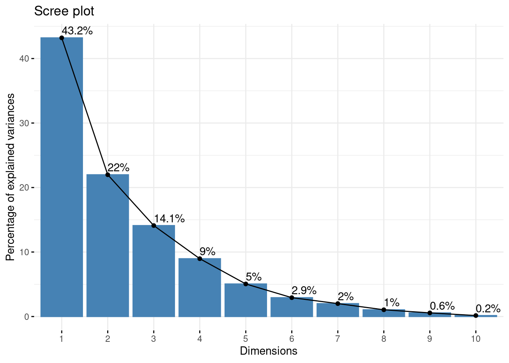
To determine the number of axes used in the PCA analysis, we need to identify the jump in variance explained by the different axes. Here we can see that the first axis represents 43.2% of the variance, the second axis 22%, the third axis 14.1%, …
We can therefore see that the jump in variance explained by the different axes is between the first and second axes. The difference between the variance explained by the axes other than the first is negligible compared to the difference between the first axis and the others.
For the PCA interpretation, we therefore retain the first two axes, which together explain 65.19% of the variance.
2) Interpretation of the biological meaning of the axes :
In PCA, the axes are interpreted according to the columns (i.e. variables) via the correlation circle and the absolute contributions of the variables.
To obtain this information in R, use the following commands:
# Obtain the absolute contributions of variables :PCA$var$contrib
The absolute contribution shows how the initial variable contributes to the formation of the axis. To find out from these results which variables contribute to the formation of the synthetic axis, we use the threshold of \(\frac{1}{nb\_variables}\times100\) (in general). For a variable to contribute, its contribution value must be greater than this threshold. This threshold value corresponds to the red dotted line on the graphs showing the absolute contributions of the variables along the axes.
From these results, we can see that axis 1 is mainly represented by the following variables:
The correlation circle also shows that some variables are related and others independent. Two related variables are represented by vectors forming an acute angle. Two independent variables are represented by orthogonal vectors. Two negatively related variables are represented by two opposite vectors.
3) Projection of individuals to create a typology based on the axes:
For this, we use the relative contributions of the individuals. These relative contributions can be used to create a typology of individuals based on the axes. The relative contribution of an individual corresponds to the share of information on the axis explained by the point and supported on the axis (in percentage).
To obtain the relative contributions of individuals on R, use the following commands:
# Relative contributions of individuals :PCA$ind$cos2
# Obtaining the projection of individuals : fviz_pca_ind(PCA)
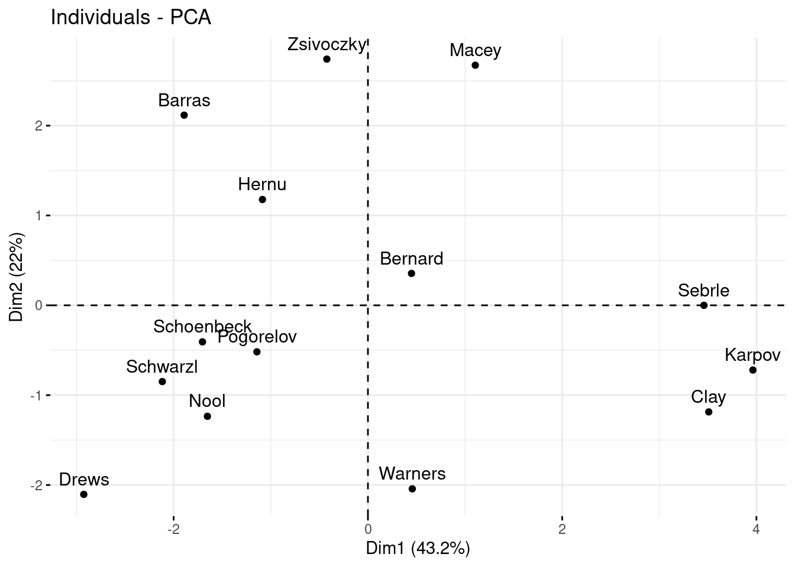
The individuals who most explain Axis 1 are :
Sebrle, Clay, Karpov, Schwarzl, Drews, Schoenbeck
Those who most explain axis 2 are :
Macey, Warners, Zsivoczky, Barras
e) Biological conclusion :
Thus, thanks to the results of the absolute contributions of the variables and the relative contributions of the individuals, we can represent the projection of the individuals and variables as follows:
fviz_pca_biplot(PCA)
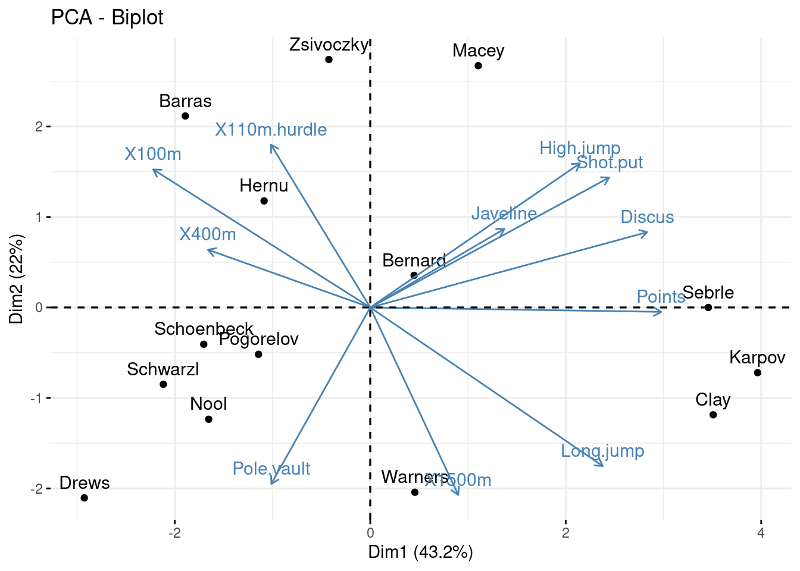
Knowing the biological interpretation of the axes :
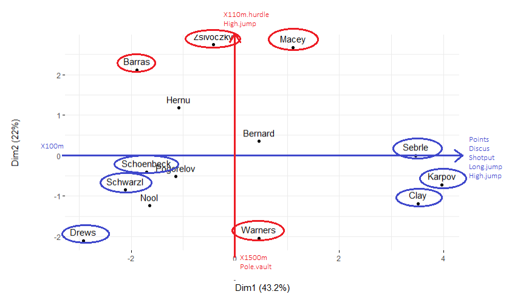
PCA interpretation
We can therefore see that the individuals with the highest scores at this tournament are those who had the best results in the discus, shot put, long jump and high jump events. In addition, having good results in the 100m race doesn’t give you a good ranking.
Thanks to PCA, we can see that the final score is more linked to the score of certain disciplines than others. And therefore, that links between certain variables and individuals can be observed.
PART 2: CA
Introduction
CA deals with tables that cross two categorical variables with several modalities, such as contingency tables, frequency tables, …
In these tables, rows and columns are interchangeable and the variables are all in the same units.
The aim of CA is to reveal structures and associations between these qualitative variables by representing them in a multidimensional space. It allows us to visualize relationships between categories of different variables, and to highlight trends, groupings or disparities. It is particularly useful for analyzing categorical data, when you want to understand the underlying structure of the data and identify associations between categories.
Unlike PCA, for a CA, we’re not interested in the distances between points, but in the distances between profiles of different modalities. A CA is therefore simply a PCA on the profiles, by equipping the space with a suitable distance: the\(\chi^2\)distance. With this distance, the weight of rows (or columns) is relativized, but not cancelled out, and the symmetry between rows and columns is preserved.
Mathematics
Correspondence Analysis (CA) represents a statistical method aimed at exploring the relationship between two sets of categories. In contrast to PCA, which applies to continuous variables, CA is designed for categorical variables, allowing the analysis of the structure of a contingency table.
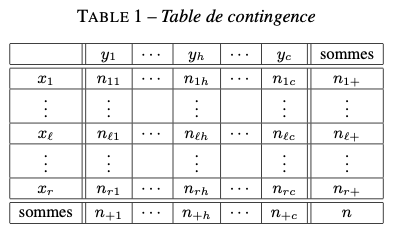
In essence, Correspondence Analysis (CA) seeks to graphically represent associations between rows and columns in a contingency table. It helps reveal trends, groupings, or oppositions within categories, providing insight into the structure of dependence between variables.
The process begins with a contingency table showing the observed frequencies of co-occurrence between different categories. These data are then transformed to obtain a probability table where the frequency of each co-occurrence is calculated as follows:
\[
f_{ij} = \frac{X_{ij}}{n}
\]With \(f_{ij}\) representing the probability that events \(i\) and \(j\) occur jointly, \(X_{ij}\) the number of times this co-occurrence has been observed, and \(n\) the total number of observations.The marginal probabilities of the columns \((f_{.j})\) and rows \((f_{i.})\) are calculated as follows:
The row profile is \(L_i = (\frac{f_{i1}}{f_{i.}},...,\frac{f_{ij}}{f_{i.}})\). In matrix terms, we will set up \(D_n=diag(f_{i.})\) such that \(L = D_n^{-1}F\). We can then define the average row profile, obtained by summing the columns of our frequency table :
The column profile is \(C_j=(\frac{f_{1j}}{f_{.j}},...,\frac{f_{ij}}{f_{.j}})\). As with row profiles, it can be expressed and calculated in matrix terms by setting: \(D_p=diag(f_{.j})\), such that \(C=D_p^{-1}F^T\). We can then define the average column profile by summing the rows of our frequency table:
One can measure the distance between two row profiles by\[d^2(i,i')=\sum_{j=1}^p(\frac{f_{i j}}{f_{i.}}-\frac{f_{i'j}}{f_{i'.}})^2\]
But this distance does not take into account the importance of each column. A more sensible choice is to use the \(\chi^2\) distance, which does take the importance of each column into consideration.
Let’s use the notation \(x\) to refer to the vector of distances between two rows \(L_{11}-L_{21}\) or between two columns \(C_{11}-C_{12}\). Adopting matrix notation, the square distance of the \(\chi^2\) is of the form:
\[
x^TD_p^{-1}x = \sum_{j=1}^p\frac{x^2_j}{f_{.j}}
\]for a row point \(x\ \epsilon\ \mathbb{R}^n\) .
- Independence
In the theory of tests, the objective is to determine whether there is a link between the two qualitative variables. The null hypothesis \(H_0\) is the independence between the two variables (no effect). The alternative hypothesis \(H_1\) is the presence of a link between the two variables.
The association between the two categorical variables is assessed through the discrepancy between the observed data and the independence model.This independence model is calculated based on the following equation:
\[
P(A\ \cap\ B) = P(A) \times P(B)
\]Therefore, the joint probability is the product of the marginal probabilities:
\[
f_{ij} = f_{i.} \times f_{.j}
\]One can then calculate the discrepancy between the observed data \((f_{ij})\) and the independence model:
The significance of the association is measured with a \(\chi^2\) test
By conducting a correspondence analysis, we aim to simultaneously represent the row profiles belonging to \(\mathbb{R}^p\) and the column profiles belonging to \(\mathbb{R}^n\) of a frequency table. As this representation is done in the Cartesian plane, it will be obtained through a double principal component analysis.
The two principal component analyses are not directly performed on the variables but rather on the row profiles (direct analysis) and the column profiles (dual analysis) presented earlier. Moreover, binary correspondence analysis incorporates the notion of column (or row) weights and the \(\chi^2\) distance.
- Direct Analysis (Rows)
The direct analysis is performed on the row profiles. The rows of \(L = D_n^{-1}F\) are elements of \(\mathbb{R}^p\). We aim to represent them in this space using the distance function \(x^TD_p^{-1}x\).
In the direct analysis, we seek the vector \(u\ \epsilon\ \mathbb{R}^p\) such as :
The solution is given by the principal eigenvector of
\[
D_pD_p^{-1}F^TD_n^{-1}FD_p^{-1}=F^TD_n^{-1}FD_p^{-1}\equiv S
\]
- Dual Analysis (Columns)
Dual analysis is performed on the column profiles. The rows of \(C = D_p^{-1}F^T\) are elements of \(\mathbb{R}^n\). We aim to represent them in this space using the distance function \(x^TD-n^{-1}x\).
In dual analysis, we seek the vector \(v\ \epsilon\ \mathbb{R}^n\) such as
\[
(v^TD_n^{-1}FD_p^{-1})D_p(D_p^{-1}F^TD-n^{-1}v)
\]is maximal, given that \(v^TD_n^{-1}v=1\).
The solution is given by the principal eigenvector of
\[
D_n(D_n^{-1}FD_p^{-1}F^TD_n^{-1})=FD_p^{-1}F^TD_n^{-1}\equiv T
\]
- Projection of both analyses onto the same plane
The usual goal of correspondence analysis is to produce a 2-dimensional graph that summarizes the information contained in the frequency table and highlights different interesting associations. In other words, we want to somehow overlay the figures resulting from dual and direct analyses.
To present both analyses in the same plane, it is essential to ensure that both PCAs project the data into the same dimensions. The transition relationships and the concept of the center of gravity presented in the following sections allow us to ensure that we are indeed projecting the “individuals” from dual and direct analyses into the same dimensions.
With\(\varphi_j\) : the eigenvector associated with the eigenvalue\(\lambda_j\)of the matrix F;\(\Psi_j\) : the modality coordinates of the row variable in the row space defined by the eigenvalues;\(\hat{\Psi}_j\)the contrinution of the component\(j\)to the row variable in the row space and\(\hat{\varphi}_j\)the contrinution of the component\(j\)to the column variable in the column space
establish an almost barycentric link between the two types of analysis, meaning that the coordinates of points in one space are proportional to the components of the factor from the other space corresponding to the same eigenvalue.
Verification: The first relationship is confirmed as follows.
\[
D_n^{-1}F\varphi_j=D_n^{-1}(FD_p^{-1}u_j) = D_n^{-1}(\sqrt{\lambda_j}v_j)=\sqrt{\lambda_j}\Psi_j
\]The second identity is demonstrated in a similar manner.
The consequences of the preceding transition relationships are that…
\((f_1,…,f_p)^T\) is an eigenvector associated with the eigenvalue \(\lambda_1=1\) of \(S=F^TD_n^{-1}FD_p^{-1}\).
Note that since the first eigenvalue is always equal to one, many software packages only mention the other \(p-1\) eigenvalues.
- Center of Gravity
To project the observations onto the same plane, we need to determine the origin of the graph.
The center of gravity of the rows is defined by \(G_L=(g_1,…,g_p)^T\), where
\[
g_j=\sum_{i=1}^nf_i\frac{f_{ij}}{f_i}=\sum_{i=1}^nf_{ij}=f_j, 1\leq j \leq p
\]Similarly, the center of gravity of the columns is defined by
\[
G_C=(f_1,...,f_n)^T
\]Centering of the rows is obtained by calculating
\[
\frac{f_{ij}}{f_i}-g_j=\frac{f_{ij}}{f_i}-f_j=\frac{f_{ij}-f_if_j}{f_i}
\]so that \(\sum_{j=1}^p\frac{f_{ij}-f_if_j}{f_i}=0\)
for all \(i\ \epsilon\)\({1,…,n}\).
The consequence of centering the rows is that the analysis is no longer conducted on \(S=F^TD_n^{-1}FD_p^{-1}\) but rather on \(S*=(s^*_{jj'})\), where
\[
s^*_{jj'}=\sum_{i=1}^n\frac{(f_{ij}-f_if_j)(f_{ij'}-f_if_j)}{f_if_{j'}}
\]To detect associations between rows and columns, one must establish a connection with the statistic of the \(\chi^2\) test.
By definition, \(trace(S*)=\sum_{j=1}^p\sum_{i=1}^n\frac{(f_{ij}-f_if_j)^2}{f_if_j}\)
Interpretation
Here’s an example of how CA can be applied.
You can import R package using the code
# Creating the dataset :## Step 1: Create eye and hair color vectorscolors_of_eyes <-c("Blue", "Brown", "Green", "Gray", "Black", "Yellow")hair_colors <-c("Black", "Brown", "Blond", "Redhead", "Chestnut", "Blues", "White", "Pink")## Step 2: Create a data array with fixed valuesfixed_values <-matrix(c(50, 35, 32, 24, 0, 0,15, 84, 34, 18, 16, 0,7, 4, 1, 20, 10, 0,0, 18, 0, 21, 34, 6,5, 3, 1, 0, 0, 3,8, 4, 2, 5, 13, 24,9, 10, 0, 12, 0, 10,1, 20, 5, 46, 2, 5), nrow =length(hair_colors), ncol =length(colors_of_eyes))## Store the matrix in an array variable : data <-as.data.frame(fixed_values)## Name rows and columnscolnames(data) <- colors_of_eyesrownames(data) <- hair_colorsdata
Blue Brown Green Gray Black Yellow
Black 50 34 10 5 2 0
Brown 35 18 0 3 5 10
Blond 32 16 0 1 13 1
Redhead 24 0 18 0 24 20
Chestnut 0 7 0 0 9 5
Blues 0 4 21 3 10 46
White 15 1 34 8 0 2
Pink 84 20 6 4 12 5
This table shows the number of people with each eye color (in columns) and hair color (in rows), for a total of 617 people sampled.
By performing a CA on this dataset, we seek to show the correspondences/oppositions between the different modalities of a variable.
a) Performing CA :
To run the CA, such as the PCA, you need to load the following two packages: factoextra and FactoMineR.
Then, to perform the CA on R, you can use the function : CA(). Remember to store the result of this PCA in a new variable, so that you can easily retrieve the PCA information you need for subsequent interpretation.
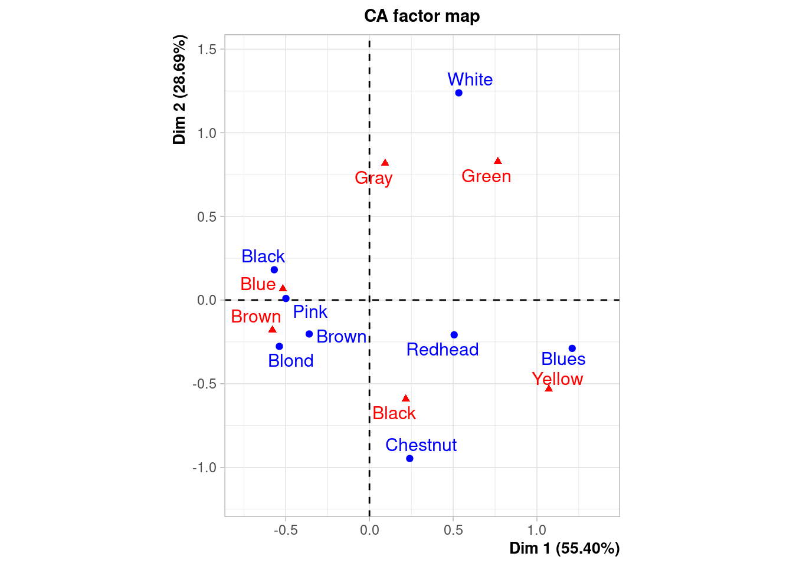
In a CA, rows are called rows and columns called col.
b) Interpretation of outputs :
1) Inertia and choice of axes :
# Recover the eigenvalues of each axis and the inertia carried by the principal componentsCA$eig
eigenvalue percentage of variance cumulative percentage of variance
dim 1 0.415178377 55.3969063 55.39691
dim 2 0.215052153 28.6942303 84.09114
dim 3 0.073125570 9.7570841 93.84822
dim 4 0.043902740 5.8579062 99.70613
dim 5 0.002202466 0.2938732 100.00000
# Graphical display of the inertia of each axis : fviz_eig(CA, addlabels =TRUE)
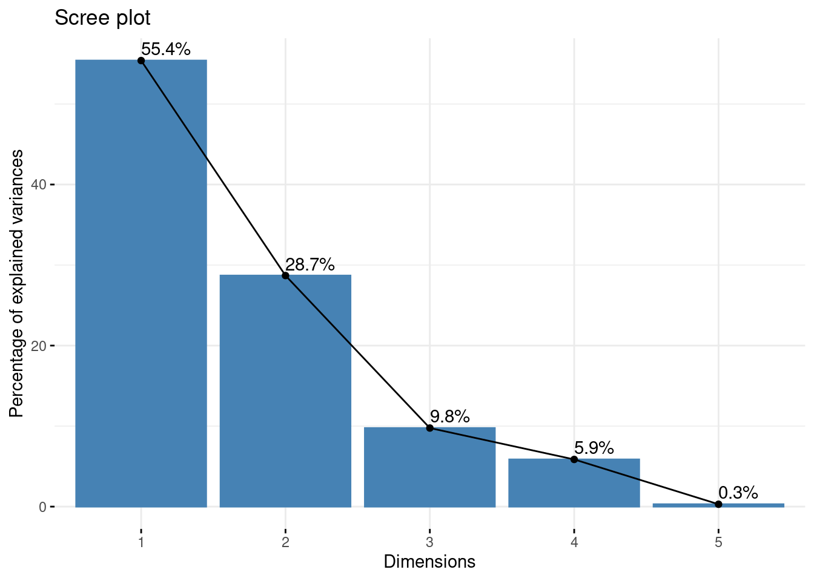
To determine the number of axes used in the CA analysis, we need to identify the jump in variance explained by the different axes. It’s the same as for PCA. Here we can see that the first axis represents 55.4% of the variance, the second axis 28.7%, the third axis 9.8%, …
We can therefore see that the jump in variance explained by the different axes is between the first and second axes. The difference between the variance explained by the axes other than the first is negligible compared to the difference between the first axis and the others.
For the CA interpretation, we therefore retain the first two axes, which together explain 65.19% of the variance.
2) Interpretation of the biological meaning of the axes :
In CA, in contrast to PCA, axes are interpreted either column-wise or row-wise. The choice depends on the initial biological question.
Here we’ll interpret the axes according to the lines, i.e. according to the hair colors. To find out which variables contribute to the synthetic axis, we use the threshold of : \(\frac{1}{nb\_variables}\)
The threshold in our case is: \(\frac{1}{8}\).
To obtain this information in R, use the following commands:
# Obtaining absolute line contribution values : Row_contrib=CA$row$contribRow_contrib>(1/8)*100
Dim 1 Dim 2 Dim 3 Dim 4 Dim 5
Black TRUE FALSE TRUE FALSE TRUE
Brown FALSE FALSE FALSE FALSE TRUE
Blond FALSE FALSE FALSE FALSE FALSE
Redhead FALSE FALSE TRUE FALSE TRUE
Chestnut FALSE TRUE FALSE TRUE FALSE
Blues TRUE FALSE TRUE FALSE FALSE
White FALSE TRUE FALSE FALSE FALSE
Pink TRUE FALSE FALSE TRUE FALSE
According to these results, the lines explaining the first axis are :
Black, Blues, Pink
The lines explaining the second axis are :
Chestnut, White
3) Interpretation of relatives contributions :
Relative contributions represent the quality of representation of the column/row by the axis.
Either the rows or the columns are interpreted, depending on the choice made in the next step. In our case, we chose the columns, since we interpreted the axes with the absolute contributions of the rows.
Dim 1 Dim 2 Dim 3 Dim 4 Dim 5
Blue 0.85575259 0.01448471 0.00950636 0.120205825 5.051631e-05
Brown 0.57556811 0.05455375 0.17954769 0.189337969 9.924835e-04
Green 0.45208660 0.52672933 0.01096464 0.008743165 1.476265e-03
Gray 0.01081361 0.82960368 0.08394864 0.020223487 5.541059e-02
Black 0.06314083 0.46740988 0.41166914 0.056819078 9.610773e-04
Yellow 0.74157647 0.18279275 0.05802235 0.017605743 2.692628e-06
Blue and yellow eye colors are well represented by axis 1. Grey eye color is represented by axis 2.
# Relative line contribution values : CA$row$cos2
Dim 1 Dim 2 Dim 3 Dim 4 Dim 5
Black 0.69781032 0.070862823 0.15315848 0.066726581 1.144180e-02
Brown 0.52754846 0.167378322 0.26792495 0.020035304 1.711296e-02
Blond 0.69002130 0.182751826 0.08463182 0.041935390 6.596638e-04
Redhead 0.49239795 0.083209727 0.41251121 0.007108659 4.772456e-03
Chestnut 0.03638017 0.564361623 0.02919618 0.365627649 4.434383e-03
Blues 0.87482351 0.049760467 0.07057401 0.004824928 1.708337e-05
White 0.15364853 0.827793121 0.00721218 0.010354558 9.916087e-04
Pink 0.78192585 0.000285946 0.02156349 0.195417315 8.073975e-04
This verifies that the modalities that contribute most to the formation of the first two axes all have a good representation quality (not always the case).
c) Biological conclusion :
For the question of links between modalities in rows or columns, you need to know that :
If we have a positive sclaire product, i.e. less than 90 degree difference between the arrows of two different modalities. Then we have a conjunction representing an affinity between these two modalities.
If we have a negative scalar product, i.e. more than 90? difference between the arrows of two different modalities. Then we have an opposition of these two modalities. They reject each other.
If we have a zero scalar product, i.e. the arrows between two different modalities are perpendicular. Then there is no link between these two modalities.
fviz_ca_biplot(CA)
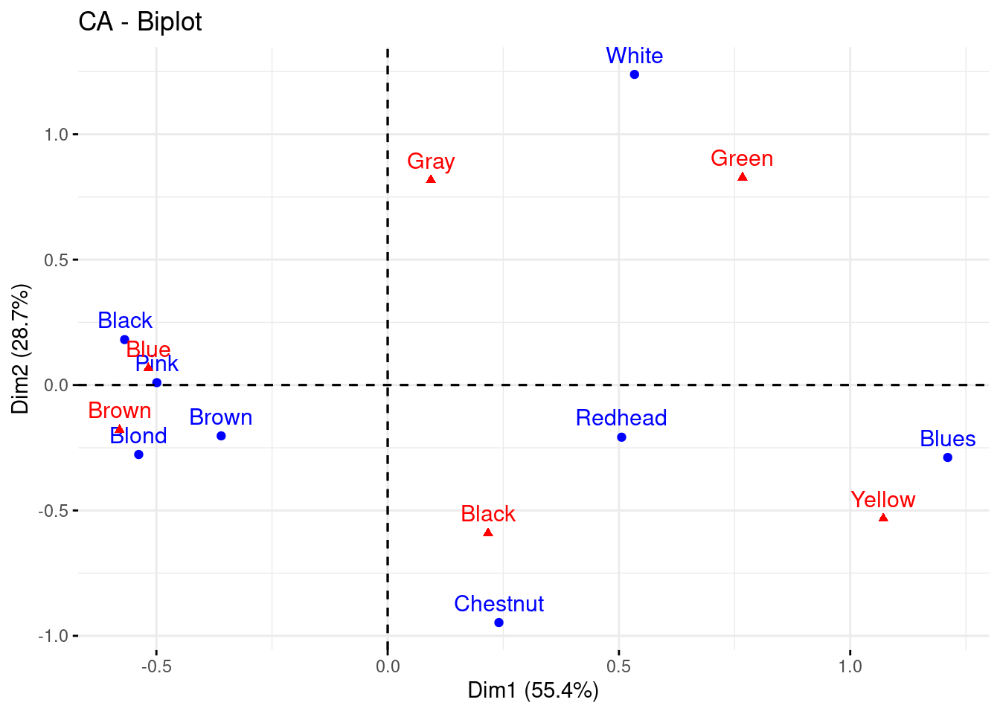
On this graph, the rows are shown in blue and the columns in red. In other words, hair color in blue and eye color in red.
From this analysis, we can see :
A conjunction between black, pink, brown or blond hair and blue or brown eyes.
A conjunction between yellow eyes and blue hair
An opposition between these two groups on axis 1.
In an analysis where the data are not created randomly, but come from different individuals from different populations. This could reveal a particular typology of one population in relation to another.
PART 3: MCA
Introduction
MCA is a statistical method adapted to table of type “individuals x quatitative variable”. Eingen Values correspond to means of squared correlation ratios. It could be used a pre-processing before a classification or a coinertia analysis on tables with quantitative.
Mathematics
The MCA stands out from other multivariate analyzes with a single table (PCA, CA or mix between MCA and PCA, etc.) because it only takes qualitative variables as input. Its goal is to find the relationships between modalities by visualizing the possible associations and producing a quantitative indicator of their relationships.
The data taken by an MCA is a table comprising \(J\) qualitative variables to describe \(I\) statistical individuals. All individuals have the same weight \(\frac{1}{I}\). The value \(V_{i,j}\) in the table corresponds to the modality taken by individual \(i\) for variable \(j\).
To obtain a complete disjunctive table (CDT) and carry out the statistical analysis, it is necessary to subdivide each variable \(j\) into \(n_{j}\) modalities corresponding to all of the responses \(V_{.,j}\) of the \(I\) individuals for this variable. The table will always have \(I\) rows but \(\sum_{j=1}^J {n_j}\) columns (we will denote K columns), in which each of the \(V_{i,k}\) values is either 1 or 0 depending on the presence or absence of the modality.
The value \(V_{i,k}\) is transformed again : the old value of \(V_{i,k}\) (1 or 0) is divided by the probability \(p_{k}\) of having this modality (i.e. \(p_k=\frac{\sum_{i=0}^I V_{i,k}}{I}\), result from which we subtract 1 to center the result.
\[V'_{i,k}=\frac{\sum_{i=1}^I V_{i,k}}{I}-1\]
We define the distance D between 2 individuals \(i\) and \(i’\) as : \[D=\frac{1}{J}\sum_{k=1}^K \frac{1}{p_{k}}(V'_{i,k}-V'_{i',k})^2\]
So 2 individuals taking the all same modalities are at a distance D = 0, the more similar the responses are over a large number of modalities, the lower the distance D will be and conversely. If two individuals share a rare modality, the distance will be reduced to take into account the common specificity.
The inertia of the point cloud : \(N = \frac{K}{J} – 1\). \(η^2(x,y)\) is the correlation ratio between 2 variables \(x\) and \(y\) and \(η^2(F_s,k)\) is the correlation ratio between the modality \(k\) and l’axe \(F_s\). The axis \(F_1\) is the one which maximize its correlation ratio with all the modalities \(k\) : \[F_1=\max(\sum_{k=1}^K η^2(F_s,V_{.,k}))\]
Interpretation
This part is a simple example of MCA using R. You can import R package using the code. Let’s have to look to fictive the data set we will be working on :
library(tidyverse)
── Attaching core tidyverse packages ──────────────────────── tidyverse 2.0.0 ──
✔ dplyr 1.1.4 ✔ readr 2.1.4
✔ forcats 1.0.0 ✔ stringr 1.5.1
✔ lubridate 1.9.3 ✔ tibble 3.2.1
✔ purrr 1.0.2 ✔ tidyr 1.3.0
── Conflicts ────────────────────────────────────────── tidyverse_conflicts() ──
✖ dplyr::filter() masks stats::filter()
✖ dplyr::lag() masks stats::lag()
ℹ Use the conflicted package (<http://conflicted.r-lib.org/>) to force all conflicts to become errors
'data.frame': 143 obs. of 4 variables:
$ Age : int 20 21 23 24 23 35 26 22 22 20 ...
$ Sex : chr "F" "M" "F" "F" ...
$ Frequency: chr "regularly" "rarely" "regularly" "regularly" ...
$ Lake : chr "G1" "G3" "G1" "G3" ...
Water consumption behaviour of Hippopotamus was observed in Penjari National Park, Benin. Drinking frequency was evaluated by a technician and rated “rarely” or “regularly”. Sex is indicated with F for female and M for male. As there are 3 lakes in the park which are noted “G1”, “G2” and “G3”.
We are performing MCA with the package FactoMineR.
Let’s have a look to Eigen Values :
res.mca$eig
eigenvalue percentage of variance cumulative percentage of variance
dim 1 0.4348479 32.61359 32.61359
dim 2 0.3391468 25.43601 58.04960
dim 3 0.3304681 24.78511 82.83470
dim 4 0.2288706 17.16530 100.00000
fviz_eig(res.mca, addlabels =TRUE)
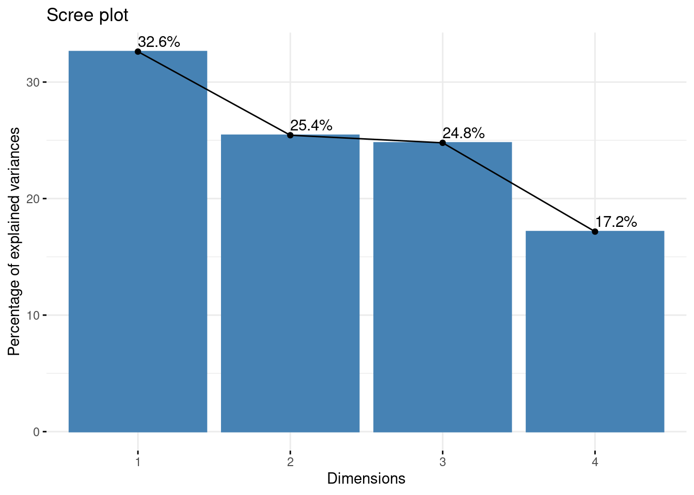
The total variance of the data set is divided between four dimensions. The first dimension concentrate 32.6% of the total variance. The first plan gather 58% of the variance. You can better visualize the repartition of variance with the plot.
Here, you can see the results for the individuals, their coordinates (\(coord\)), absolute contributions (\(contrib\)), and the quality of their projection (\(cos2\)).
head(res.mca$ind$coord)
Dim 1 Dim 2 Dim 3 Dim 4
1 -0.2750115 -0.3282379 0.953675653 0.2177425
2 1.1910863 -0.2970654 -0.817927621 0.0463482
3 -0.2750115 -0.3282379 0.953675653 0.2177425
4 -0.5234147 -0.6299231 -0.447176405 0.1119000
5 -0.2750115 -0.3282379 0.953675653 0.2177425
6 -0.6770613 0.6031855 0.005825436 -0.2073689
head(res.mca$ind$cos2)
Dim 1 Dim 2 Dim 3 Dim 4
1 0.06632695 0.09448565 7.976083e-01 0.0415790594
2 0.65134489 0.04051620 3.071527e-01 0.0009862576
3 0.06632695 0.09448565 7.976083e-01 0.0415790594
4 0.31017449 0.44925117 2.263977e-01 0.0141766670
5 0.06632695 0.09448565 7.976083e-01 0.0415790594
6 0.52978429 0.42047948 3.921931e-05 0.0496970050
head(res.mca$ind$contrib)
Dim 1 Dim 2 Dim 3 Dim 4
1 0.1216265 0.2221539 1.924579e+00 0.144863948
2 2.2814613 0.1819619 1.415677e+00 0.006563565
3 0.1216265 0.2221539 1.924579e+00 0.144863948
4 0.4405736 0.8181846 4.231479e-01 0.038259024
5 0.1216265 0.2221539 1.924579e+00 0.144863948
6 0.7371954 0.7502017 7.181106e-05 0.131389632
Coordonates of the individuals are their position on the first plan. \(cos2\) represents the quality of the representation of the individuals on the first plan. Contribution is how the point contribute to the creation of different axis.
You can access the same information for the variable (instead of the individuals):
res.mca$var$coord
Dim 1 Dim 2 Dim 3 Dim 4
F -0.47746388 -0.21701783 0.15112124 -0.3434173
M 1.14818694 0.52187620 -0.36341060 0.8258369
rarely 1.23505546 -0.11004338 -0.08731625 -0.8834510
regularly -0.53107385 0.04731865 0.03754599 0.3798839
G1 0.46448522 -0.40376182 1.45603286 0.2760402
G2 -0.33088584 1.22351803 -0.17862073 -0.3340851
G3 -0.02692834 -0.93083264 -0.95986346 0.1241336
res.mca$var$contrib
Dim 1 Dim 2 Dim 3 Dim 4
F 12.34263168 3.2693937 1.62699252 12.1316114
M 29.68109047 7.8621135 3.91252964 29.1736370
rarely 35.15982729 0.3578914 0.23124469 34.1811065
regularly 15.11872574 0.1538933 0.09943522 14.6978758
G1 4.62603750 4.4819347 59.81574581 3.1042541
G2 3.05186316 53.5031214 1.17025431 5.9111247
G3 0.01982416 30.3716520 33.14379781 0.8003904
res.mca$var$cos2
Dim 1 Dim 2 Dim 3 Dim 4
F 0.5482177869 0.113256440 0.054919059 0.283606714
M 0.5482177869 0.113256440 0.054919059 0.283606714
rarely 0.6559056566 0.005207104 0.003278375 0.335608865
regularly 0.6559056566 0.005207104 0.003278375 0.335608865
G1 0.0837850567 0.063310139 0.823313280 0.029591524
G2 0.0625631068 0.855426501 0.018231638 0.063778755
G3 0.0004019773 0.480314347 0.510741640 0.008542035
Let’s have a look to the plot of this MCA analysis :
plot(res.mca)
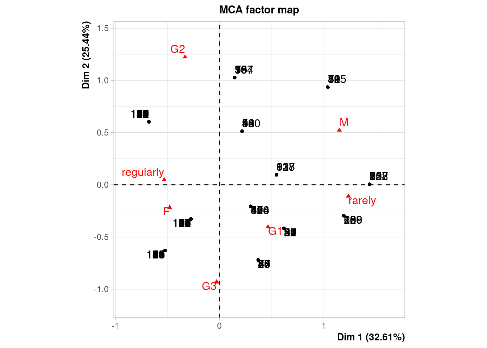
As this is a factice data set, some individuals are overlapping. We will not focus on this artefact of the data set.
How to interprete these graphs?
General description : The individuals are in black. The variables are in red. The percentage of variance of the first two axis is written on them. Individuals in the center of the cloud are individuals taking a mean value for all of their caracteristics, unlikely individuals far from the middle which are specific individuals, very different from others. Close individuals present close characteristics.
Interpretation: Here, we can see that the first axis separates individuals drinking regularly from individuals drinking rarely. The second axis separates individuals drinking at G2 from individuals drinking at G3. Male and female seamed to be separated by the first axis. As we can gather individuals sharing close properties, females seams to drink regularly and male more rarely. It is a bit less clear but male are drinking preferably in pound 1.
Note that supplementary quantitaive data could be added to the analysis to help interpretation. As they are quantitatives, they would not participate to the creation of axis but they may be ploted on the final graph.
PART 4: CCA
Introduction
Two table analysis is used when the scientist possesses two data set with expecting the second to explain the first. The first one is called Y, the response variable and the second one is called X, the explanatory variable. For example :
Table Y | Table X
a data set with temperature data | a data set with cities caracteristics such as heigth of buildings, concreted area, number of cars… |
a data set with the quantity of chemicals in soil | a data set with % of pesticide applied |
a data set with functional traits of an animal | a data set with the quantities of different food given to the animal |
RDA is used when expecting a linear response from \(X\) to \(Y\). Only the variables of \(X\) explaining \(Y\) would be kept. The canonical axis are a linear combinaison of the explicative variable (\(Y\)). The \(Y\) table will be ordered with a PCA. Then, a multiple regression of \(Y\) on \(X\) is done and stored in a new table, \(Y'\). The residual matrix correspond to \(Y-Y'\), what was not explained by \(X\).
Interpretation
Here are the library you will need to perfor the RDA, make sure your import them at the begining of your working document.
So here, the first table (“Oak_sp”) represents a table of plant abundance for 47 sites (47 rows). We have 56 differents species. The second table (“Topo”) corresponds to 4 topographics variables (Latitute, Longitute of sites, the elevation and the slope). As it is not the same unit for each variable we have centred-reduced these four variables.
As explained above, the CCA objective is to link the abundance of plant by the topographics variables. Here, we have a priori hypothesis on the effect of these environmental variables on the plants.
We have seen in introduction of the part 3 that CCA was used when the respond have a non-linear distribution but rather a gaussian relationship.
So we begin by performing a CA on the species table:
caoak <-dudi.coa(Oak_sp,scannf=F,nf=2)
Then, we can perform the PCA on the CA that corresponds to the CCA with the ADE4 package:
ccaoak <-pcaiv(caoak,Topo,scannf=F,nf=2)
You can also realize the CCA with one code row only with the vegan package:
ccavegan=cca(Oak_sp,Topo,scan=F)
It is important to use the two methods because each allows us to have different information during the analyse of the result
An we already have completed our analyse, it was no difficult! But now, we need analyse the result and test the significant.
To test the significant, we use a bootstrapping test thank you the ADE4 package.It is important to test if the result of the RLQ is not only due to random combination of values but that we have a real correlation between are different tables. To produce this, we perform a permutation test with the function randtest.
randtest(ccaoak)#with ADE4
Monte-Carlo test
Call: randtest.pcaiv(xtest = ccaoak)
Observation: 0.1270957
Based on 99 replicates
Simulated p-value: 0.01
Alternative hypothesis: greater
Std.Obs Expectation Variance
3.3273097300 0.0852729286 0.0001579932
plot(randtest(ccaoak))
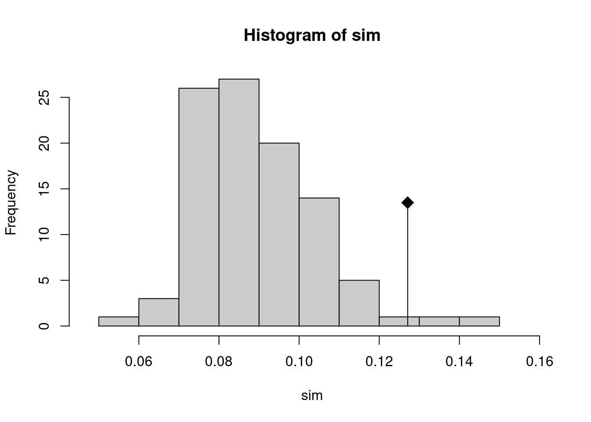
The outputs above corresponds to the permutation test. We see that the number of permutation of columns and rows was to 999 (default value).
The results of this test shows that our result is significatively different to the permutation result with a threshold of 5% (p-value = 0.02)
Finally, the results of the CCA are plot in the distribution law calculated by the permutation. So we can conclude that our environmental variables explain a part of the plant distribution.
We have now to look the collinearity between the environmental variable. It corresponds to the correlation between them. For that, we use the Variance Inflation Factor (VIF).
If all the variables have a number lower than 10, you can conclude that you do not not have collinearity. If you have, you need to select some variables to remove with, for example, an ordistep function.
Now that we have tested all the conditions, we can look at the results.
ccaoak
Canonical correspondence analysis
call: pcaiv(dudi = caoak, df = Topo, scannf = F, nf = 2)
class: caiv pcaiv dudi
$rank (rank) : 4
$nf (axis saved) : 2
eigen values: 0.3446 0.179 0.1231 0.05905
vector length mode content
$eig 4 numeric eigen values
$lw 47 numeric row weigths (from dudi)
$cw 56 numeric col weigths (from dudi)
data.frame nrow ncol content
$Y 47 56 Dependant variables
$X 47 4 Explanatory variables
$tab 47 56 modified array (projected variables)
data.frame nrow ncol content
$c1 56 2 PPA Pseudo Principal Axes
$as 2 2 Principal axis of dudi$tab on PAP
$ls 47 2 projection of lines of dudi$tab on PPA
$li 47 2 $ls predicted by X
data.frame nrow ncol content
$fa 5 2 Loadings (CPC as linear combinations of X
$l1 47 2 CPC Constraint Principal Components
$co 56 2 inner product CPC - Y
$cor 4 2 correlation CPC - X
print(paste("The pourcentage of variance explained by topographic variables is: ",sum(ccaoak$eig)/sum(caoak$eig),"%"))
[1] "The pourcentage of variance explained by topographic variables is: 0.127095660396168 %"
The first output (by ADE4) allows us to see each part of the analyse that could be use to describe the result. We will use especially the last part afterward. You also have, at the beginning, the number of rank that corresponds to the number of eigenvalue with their score below. We can calculate the percentage of variance explained by topographic variables.
ccavegan
Call: cca(X = Oak_sp, Y = Topo, scan = F)
Inertia Proportion Rank
Total 5.5529 1.0000
Constrained 0.7057 0.1271 4
Unconstrained 4.8471 0.8729 38
Inertia is scaled Chi-square
17 species (variables) deleted due to missingness
Eigenvalues for constrained axes:
CCA1 CCA2 CCA3 CCA4
0.3446 0.1790 0.1231 0.0590
Eigenvalues for unconstrained axes:
CA1 CA2 CA3 CA4 CA5 CA6 CA7 CA8
0.7256 0.5739 0.4521 0.4240 0.3563 0.2448 0.2239 0.1857
(Showing 8 of 38 unconstrained eigenvalues)
Here, it is the output with the vegan package. We can see the total inertia in the CCA analyse (5.55) and the inertia explained by the topographic variables (0.71) and by the residuals (4.85). We can therefore conclude that our topographic variables explain only 13% of the plant variances (same result that before). Below that, we have the eigenvalues for the constrained axes (variance part explained by topographic variables) and for the unconstrained axes (variance part explained by the residuals)
We can now, observe the complet plot of the CCA result:
plot(ccaoak)
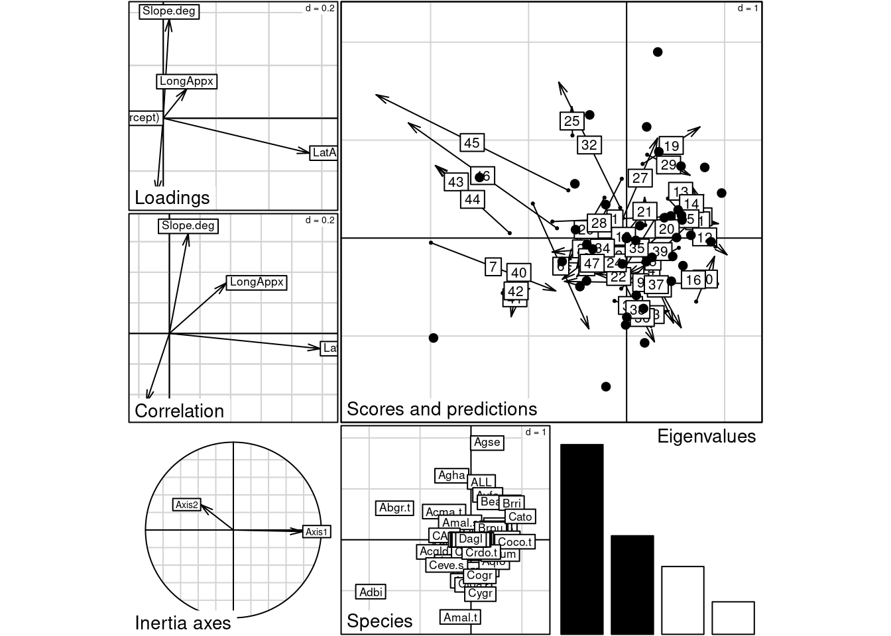
Here, we can have a complete plot with the ADE4 package.
The “Loadings” part represents the canonical coefficients. For each axis, the arrows explain the relative weight of the topographic variables in the multiple regression calculation.
The “Correlation” part shows the correlation between topographic variables themselves and with CCA axes
The “Scores and Predictions” part allows us to understand, for each site, the real plant abundance (base of arrows) and the abundance predicted by multiple regressions with the topographic variables.
The “Species” part corresponds to the coordinates of each plant species in the CCA analyse
But this can also be decomposed in different plots and output.We can detail each part and observe the biological results.
We can begin by the absolute contribution of species:
contrib=inertia.dudi(ccaoak, col =TRUE, row =FALSE)contrib$col.abs
The output, here, is the absolute contribution of each species for the axis 1 and the axis 2. This allows us to observe what species contributes the most of the axes.
This line gives you the canonical coefficients on each axis. The circle is explain in the “Loadings” part of the main plot of the RDA. On axis 1, the variable with the main contribution of the predictive power is \(LatAppx\). On axis 2, \(Slope.deg\) and \(Elev.m\) contributes the most of the predictive power.
\(co\) gives you access to the coordinates of each species on the first plan. The table explicits the coordinates and the plot help you to find close species. On the first axis, two species have high negative value : Adbi (-1.97) & Abgr.t (-1.50). They are opposed at species as Coco.t (0.86) & Cato (0.96). You can realize the same for the second axis.
Here, we can highlight that there is a group formed by Agse (coord = 0.31 ; 1.90 respectively for the axis 1 and 2), Agha (coord = -0.38 ; 1.25) Avfa (coord = 0.33 ; 0.88) and ALL (coord = 0.20 ; 1.14). An other on with two outliers, Abgr.t and Adbi. These groups will be correlated with the environment data further in the analysis.
Here, we have the correlation between axes and the topographic variables. We can conclude that the elevation (corr = -0.15[axis1] ; -0.45[axis2]) and the slope (corr = 0.12[axis1] ; 0.65[axis2]) are strongly negatively correlated. The Longitude seems to be positively correlated with the slope and negatively correlated with the elevation.
s.match(ccaoak$ls, ccaoak$li)
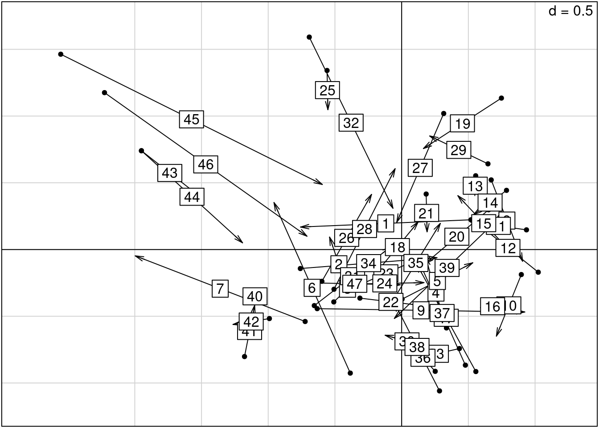
plot(ccavegan,scaling=1)
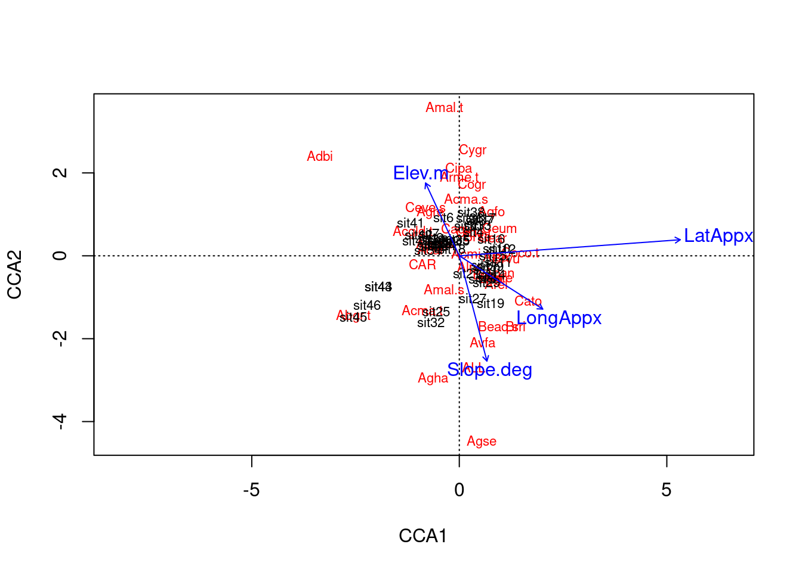
plot(ccavegan,scaling=2)
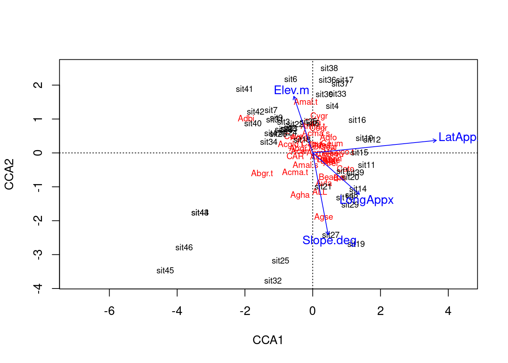
The first plot with the arrows represents the real abundances for each site (base of the arrow) and the predictions of abundance calculated by a multiple regression thanks to the topographic variables. We see here that there are some large differences between reality and prediction. Most of the sites are in a center group but some sites differ. It is the case with the sites n°7,40,41,42. We have another group with the sites n°43,44,45,46.
The second plot, with scaling = 1 preserves euclidian distances between stations.
The third plot, with scaling = 2 preserves correlations between species.
To conclude on the CCA analyse, we have seen that the topographic variables explain 13% of the plant variances. The first axis represents 34% of the constrained inertia and is explained by the Latitude (corr = 0.99). We can see that two species have a high coordinate in this axis (Adbi & Abgr.t).
The second axis (18% of the constrained inertia) is explained by the Elevation (corr = -0.45), the Slope (corr = 0.65) and the Longitude (corr = 0.33).
Finally, the sites n°43,44,45,46 are sites with a small latitude value and with a high abundance of species as Abgr.t.
PART 5: RLQ
Introduction
The RLQ analysis is a generalized co-inertia with 3 tables : environmental variables for each sites (R), species abundances for each sites (L) and trait variables for each species (Q). We will have to perform a CA on the table L and weighted analysis (MCA or PCA) on tablesR and Q. Then a function named rlq() perform 3 co-inertia analysis between R and L and L and Q and then between the results of each co-inertia.
Interpretation
The use of RLQ analysis is important in ecology to integrate the traits of species with the environmental variables. So here, we don’t have 2 tables (environment & specie) as RDA part but 3 tables:
environmental variables by sites (R)
abundance of species by sites (L)
trait values by species (Q)
To perform the RLQ, we need to decompose the analyse by three type of analyses already done in this chapter:
we will use a CA analyse on the abundance of species
we will use a MCA on the environmental table by taking the sites weight on the CA
we will use a MCA on the trait table by taking the species weight on the CA
Here, we use MCA for R and Q because our variables are factors but you can perform a PCA if your variables are quantitatives. Warning, for R and Q you have the obligation to weight by the L table (see below).
The following objects are masked from 'package:base':
as.Date, as.Date.numeric
######################### Warning from 'xts' package ##########################
# #
# The dplyr lag() function breaks how base R's lag() function is supposed to #
# work, which breaks lag(my_xts). Calls to lag(my_xts) that you type or #
# source() into this session won't work correctly. #
# #
# Use stats::lag() to make sure you're not using dplyr::lag(), or you can add #
# conflictRules('dplyr', exclude = 'lag') to your .Rprofile to stop #
# dplyr from breaking base R's lag() function. #
# #
# Code in packages is not affected. It's protected by R's namespace mechanism #
# Set `options(xts.warn_dplyr_breaks_lag = FALSE)` to suppress this warning. #
# #
###############################################################################
Attaching package: 'xts'
The following objects are masked from 'package:dplyr':
first, last
Attaching package: 'PerformanceAnalytics'
The following object is masked from 'package:graphics':
legend
Here, we work with a dataset of ADE4 package. The data comes from @dray2008testing, @legendre1997relating
#import the datasetdata(aviurba)#create the three tablessummary(aviurba$mil) #(R)
farms small.bui high.bui industry fields grassland scrubby deciduous
yes:22 yes:13 yes: 8 yes:12 yes:22 yes:12 yes:30 yes:36
no :29 no :38 no :43 no :39 no :29 no :39 no :21 no :15
conifer noisy veg.cover
yes: 8 yes:10 R37 :9
no :43 no :41 R5 :8
R98 :7
R93 :7
R22 :6
R87 :5
(Other):9
R<-aviurba$milsummary(aviurba$fau) #(L)
Sp1 Sp2 Sp3 Sp4
Min. :0.00000 Min. :0.0000 Min. :0.00000 Min. :0.0000
1st Qu.:0.00000 1st Qu.:0.0000 1st Qu.:0.00000 1st Qu.:0.0000
Median :0.00000 Median :0.0000 Median :0.00000 Median :0.0000
Mean :0.05882 Mean :0.1373 Mean :0.07843 Mean :0.7647
3rd Qu.:0.00000 3rd Qu.:0.0000 3rd Qu.:0.00000 3rd Qu.:1.0000
Max. :1.00000 Max. :2.0000 Max. :1.00000 Max. :4.0000
Sp5 Sp6 Sp7 Sp8
Min. :0.0000 Min. :0.0000 Min. :0.0000 Min. :0.000
1st Qu.:0.0000 1st Qu.:0.0000 1st Qu.:0.0000 1st Qu.:0.000
Median :0.0000 Median :0.0000 Median :0.0000 Median :3.000
Mean :0.1176 Mean :0.2353 Mean :0.1569 Mean :2.078
3rd Qu.:0.0000 3rd Qu.:0.0000 3rd Qu.:0.0000 3rd Qu.:3.000
Max. :2.0000 Max. :1.0000 Max. :1.0000 Max. :4.000
Sp9 Sp10 Sp11 Sp12
Min. :0.0000 Min. :0.0000 Min. :0.0000 Min. :0.00000
1st Qu.:0.0000 1st Qu.:0.0000 1st Qu.:0.0000 1st Qu.:0.00000
Median :0.0000 Median :0.0000 Median :0.0000 Median :0.00000
Mean :0.5882 Mean :0.6275 Mean :0.3922 Mean :0.03922
3rd Qu.:1.0000 3rd Qu.:1.0000 3rd Qu.:0.0000 3rd Qu.:0.00000
Max. :3.0000 Max. :4.0000 Max. :4.0000 Max. :1.00000
Sp13 Sp14 Sp15 Sp16
Min. :0.00000 Min. :0.00000 Min. :0.0000 Min. :0.0000
1st Qu.:0.00000 1st Qu.:0.00000 1st Qu.:0.0000 1st Qu.:0.0000
Median :0.00000 Median :0.00000 Median :0.0000 Median :0.0000
Mean :0.05882 Mean :0.03922 Mean :0.1961 Mean :0.3725
3rd Qu.:0.00000 3rd Qu.:0.00000 3rd Qu.:0.0000 3rd Qu.:1.0000
Max. :1.00000 Max. :1.00000 Max. :2.0000 Max. :1.0000
Sp17 Sp18 Sp19 Sp20
Min. :0.00000 Min. :0.0000 Min. :0.0000 Min. :0.0000
1st Qu.:0.00000 1st Qu.:0.0000 1st Qu.:0.0000 1st Qu.:0.0000
Median :0.00000 Median :0.0000 Median :1.0000 Median :0.0000
Mean :0.07843 Mean :0.4118 Mean :0.7059 Mean :0.2157
3rd Qu.:0.00000 3rd Qu.:1.0000 3rd Qu.:1.0000 3rd Qu.:0.0000
Max. :1.00000 Max. :2.0000 Max. :2.0000 Max. :2.0000
Sp21 Sp22 Sp23 Sp24
Min. :0.00000 Min. :0.0000 Min. :0.00000 Min. :0.00000
1st Qu.:0.00000 1st Qu.:0.0000 1st Qu.:0.00000 1st Qu.:0.00000
Median :0.00000 Median :0.0000 Median :0.00000 Median :0.00000
Mean :0.03922 Mean :0.3725 Mean :0.07843 Mean :0.09804
3rd Qu.:0.00000 3rd Qu.:1.0000 3rd Qu.:0.00000 3rd Qu.:0.00000
Max. :1.00000 Max. :2.0000 Max. :1.00000 Max. :1.00000
Sp25 Sp26 Sp27 Sp28
Min. :0.00000 Min. :0.0000 Min. :0.0000 Min. :0.00000
1st Qu.:0.00000 1st Qu.:0.0000 1st Qu.:0.0000 1st Qu.:0.00000
Median :0.00000 Median :0.0000 Median :0.0000 Median :0.00000
Mean :0.03922 Mean :0.1961 Mean :0.2353 Mean :0.03922
3rd Qu.:0.00000 3rd Qu.:0.0000 3rd Qu.:0.0000 3rd Qu.:0.00000
Max. :1.00000 Max. :1.0000 Max. :2.0000 Max. :1.00000
Sp29 Sp30 Sp31 Sp32
Min. :0.00 Min. :0.0000 Min. :0.0000 Min. :0.0000
1st Qu.:2.00 1st Qu.:0.0000 1st Qu.:0.0000 1st Qu.:0.0000
Median :3.00 Median :0.0000 Median :0.0000 Median :1.0000
Mean :2.49 Mean :0.6667 Mean :0.2353 Mean :0.8627
3rd Qu.:3.00 3rd Qu.:1.0000 3rd Qu.:0.0000 3rd Qu.:1.0000
Max. :4.00 Max. :4.0000 Max. :2.0000 Max. :3.0000
Sp33 Sp34 Sp35 Sp36
Min. :0.0000 Min. :0.00000 Min. :0.0000 Min. :0.000
1st Qu.:0.0000 1st Qu.:0.00000 1st Qu.:0.0000 1st Qu.:0.000
Median :0.0000 Median :0.00000 Median :1.0000 Median :0.000
Mean :0.2941 Mean :0.07843 Mean :0.5686 Mean :0.451
3rd Qu.:1.0000 3rd Qu.:0.00000 3rd Qu.:1.0000 3rd Qu.:1.000
Max. :1.0000 Max. :2.00000 Max. :3.0000 Max. :3.000
Sp37 Sp38 Sp39 Sp40
Min. :0.00000 Min. :0.0000 Min. :0.00000 Min. :0.0000
1st Qu.:0.00000 1st Qu.:0.0000 1st Qu.:0.00000 1st Qu.:0.0000
Median :0.00000 Median :0.0000 Median :0.00000 Median :0.0000
Mean :0.05882 Mean :0.1765 Mean :0.03922 Mean :0.4118
3rd Qu.:0.00000 3rd Qu.:0.0000 3rd Qu.:0.00000 3rd Qu.:1.0000
Max. :1.00000 Max. :2.0000 Max. :1.00000 Max. :3.0000
farms small.bui high.bui industry fields grassland scrubby deciduous conifer
R1 yes no no no yes no no yes no
R2 yes no no no no yes yes no no
R3 no no no no yes no yes yes no
R4 no no no no yes no yes no no
R5 no no no yes no no yes no no
R6 no no no yes no yes yes no no
noisy veg.cover
R1 no R98
R2 no R87
R3 no R100
R4 no R100
R5 no R5
R6 yes R5
The first CA is done. We use log transformation because the abundance of species has a large range and we add “+1” to avoid the log(0) for some species. You must adapt the presence of transformation (or not) to your data.
Now, we can perform the two MCA analysis on the trait table and environmental table
axe=c(1:8)print(paste("The contribution of axe n°",axe, "are", rlq$eig/(sum(rlq$eig))*100,"%"))
[1] "The contribution of axe n° 1 are 66.6748744763001 %"
[2] "The contribution of axe n° 2 are 19.5228230896623 %"
[3] "The contribution of axe n° 3 are 9.51702542395437 %"
[4] "The contribution of axe n° 4 are 2.83090411660832 %"
[5] "The contribution of axe n° 5 are 0.810200444830495 %"
[6] "The contribution of axe n° 6 are 0.421072849575587 %"
[7] "The contribution of axe n° 7 are 0.124897113199049 %"
[8] "The contribution of axe n° 8 are 0.0982024858697611 %"
#randtest(rlq)#summary(rlq)#plot(rlq)
Here, the output of the RLQ is complex but only few information are, at this point important. We see that we have 8 eigenvalues and we have their values. All the different compounds of the output will be used after in representations or analysis.
Nevertheless, we can calculate the contribution of each axis of the RLQ by performing the formule below: \[\frac{rlq$eig}{\sum{rlq$eig}}.100\]
After that, and before to plot and analyse the result, it is important to test if the result of the RLQ is not only due to random combination of values but that we have a real correlation between are different tables. To produce this, we perform a permutation test with the function randtest.
randtest(rlq)
class: krandtest lightkrandtest
Monte-Carlo tests
Call: randtest.rlq(xtest = rlq)
Number of tests: 2
Adjustment method for multiple comparisons: none
Permutation number: 999
Test Obs Std.Obs Alter Pvalue
1 Model 2 0.01602442 9.151203 greater 0.001
2 Model 4 0.01602442 2.293103 greater 0.032
plot(randtest(rlq))
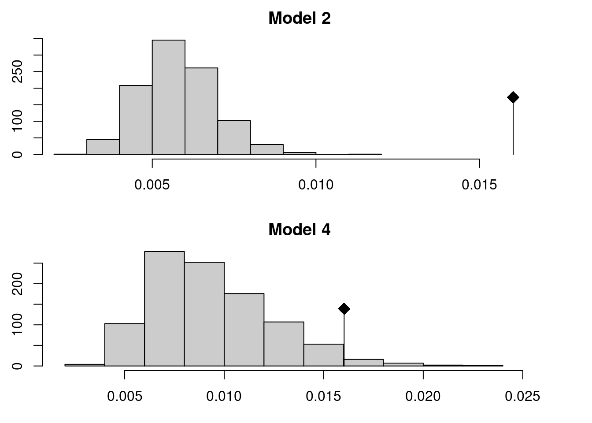
The outputs above corresponds to the permutation test. We see that the number of permutation of columns and rows was to 999 (default value).
The results of this test shows that the permutation of sites (rows) is the first result (p_value=0.1%) and the permutation of species (columns) is the second result (p_value=1.9%) So each result is significant (5% threshold) and we can conclude that our RLQ result is not linked to random effect.
Finally, the results of the RLQ are plot in the distribution law calculated by the permutation.
We can know analyse the result by using different types of plot:
plot(rlq)
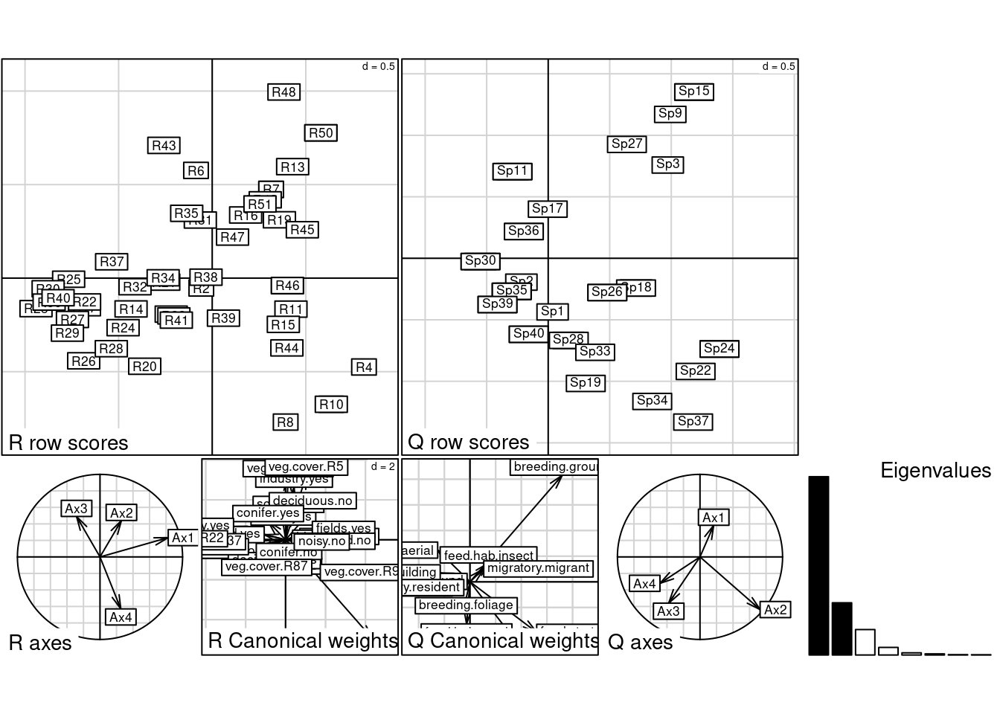
The plot above is the complet plot, difficult to understand and that will be resumed step by step afterward.
However, we have here, up the score (the position) of the sites and species in this analyse. Below in the centre, we have the correlation of the environmental variables between them (R Canonical weights) and the correlation of the traits between them (Q Canonical weight). The plots of the R axes and the Q axes represent the reprojection of axis in the RLQ analyse in order to the simple analyses (CA or MCA here).
Now, we can decompose the result and start with the environmental variables:
#analyse the environmental variables:round(rlq$l1,dig=2)
The table corresponds to the position of each modality for each environmental variables on the two first axis. You can link this table to the plot. For example, “veg.cover.R100” seems to stand out from the other modalities. In the table, we can see that the position on the first axis is 4.35 and -4.95 on the second axis. Closer to the center of the cloud, we can talk about “veg.cover.R98” that have position of 1.74 on the first axis and -1.64 on the second axis. In addition, we can observe the contribution of this two variables. On the second table we have the absolute contribution of the modalities for each variable. The contribution of the “veg.cover.R100” of the first axis is 17% and 22% on the second axis. This is a high value if we take the threshold to 1/N with N the number of modalities (28 here so 3%). The contribution of “veg.cover.R98” is 4.6% for the first axis and 4.1% for the second axis.
We can therefore conclude that this two variables are correlated. This seems to be biologically coherent since these two variables are part of a plant cover gradient and are the two highest values.
We can also see that the variable negatively correlated with the first axis are modalities explaining the urbanization ()
Now we can realise the same analyse for the traits.
As seen before, the first table is the position of the modalities for the two first axes of the RLQ analyses. The plot is the representation of that and the second table is the absolute contributions.
Here, we have larger differences between the different variable and modalities. We’re going to focus on a few examples, but you can take the time to go into detail about each modality. “feed.strat.foliage” (coord= 2.60; -1.97 for first and second axis respectively) and “breeding.scrub” (coord= 1.71: -2.22) break away from the centre of the cloud. In addition their contributions are all greater than 10%. We can conclude that these modalities are correlated and highly contribute of axes.
The last point is to observe the species coordinates.
Here, is to see that we seems to have a gradient of response along the first axis (i.e. Loriot Jaune/Sp37 [coord=1.18; -1.33] and Alouette des champs/Sp9 [coord=0.99; 1.17]) and along the second axis (i.e. Loriot Jaune/Sp37 [coord=1.18; -1.33] and Fauvette des jardins/Sp21 [coord=0.99; 1.17]). We will see that we need to link this to the others variables (trait and environment) For species and sites, we do not have contribution because these variables do not contribute of the axis creation.
To conclude on this analysis, the two first axes explain 86.2% of the total variation with respectively 66.7%, and 19.5% of the total inertia.
The correlations between the environmental variables and the RLQ axes showed that the first axis is explained by Veg.cover.R100 (contribution of 16.95%), veg.cover.R22 (7.43%), noisy.yes (8.82%), small.bui.yes (11.22%), field.yes (8.17%), field.no (8.2%) and Veg.cover.R22 (7.43%). The traits variables that contribute to the first axis of the RLQ axes are breeding.ground (28.19%), feed.strat.foliage (19.8%), breeding.scrub (13.3%) and negatively with breeding.building (17.18%) and feed.strat.aerial (7.09%). In other words, breeding.ground, feed.strat.foliage, breeding.scrub, feed.strat.aerial and breeding.building were the higher explanatory attributes for this RLQ axis (explained by the length and the angle between the axes and the vectors).
To go further with Multivariate Analysis
Two other methods of two tables analysis were not presented here :
Co-inertia is used when you have a table with you response variable \(Y\) and a second one with potentially explaining variables, \(X\), but you do not have any a priori about the effect of \(X\) on \(Y\).
CCA is used with two table, where both \(Y\)and\(X\)are quantitative data. It works the same as RDA.
PCCA is CCA like but it includes a spacial dependency… Spacial and Temporal dependencies are a great deal in data analysis !
Even if this presentation of multivariate analysis was not exhaustive, you can have a better view of what you can do when you are to analyse a data table. The method chosen will depend on the number of tables and the type of the variables (quantitative or qualitative). To help you decide what analysis to use regarding to the ones we presented here, you can have a look to this decision tree !
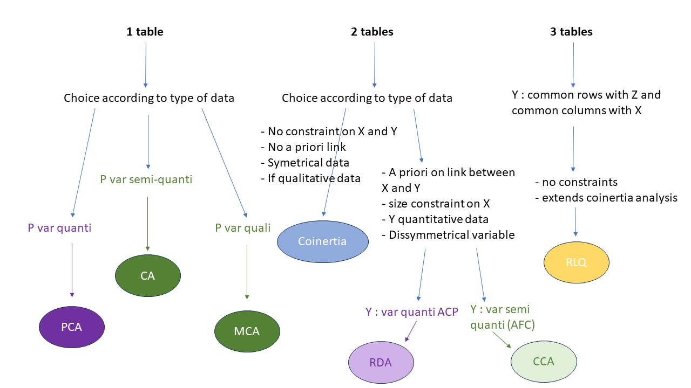
Decision tree multivariate analysis (from A. Pannard)